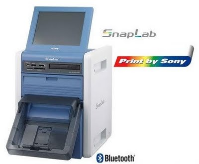
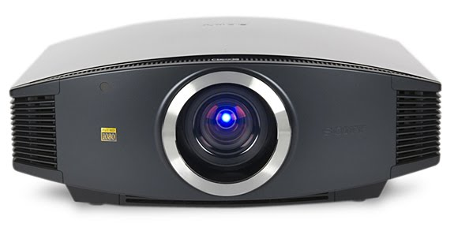
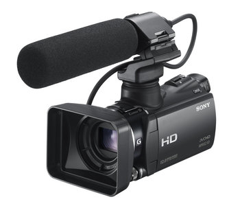

Donde estamos

Sovitel Electrónica, servicio Sony Bilbao. Las marcas y logos son propiedad de sus titulares y están protegidos por las leyes del copyright.
Impresoras Sony Upcr20L
El sistema todo en uno SnapLab UP-CR20L ha sido diseñado para ofrecerle un valor añadido a usted y a sus clientes. Creado para adaptarse a todos los entornos del sector minorista o para usarlo en exhibiciones y eventos familiares, genera copias de fotografía con calidad de laboratorio en cuestión de segundos. Atraerá a la clientela gracias a su interfaz de manejo sencillo y a las copias de aspecto excelente, mientras usted obtiene ingresos extra sin necesidad de ocupar mucho espacio.
En Bilbao está a su disposición el servicio oficial (Sovitel Electrónica), un servicio técnico a la altura de un producto de calidad. En sus instalaciones situadas en la calle Tellagorri nº 10 (Basurto) le ofrecen la asistencia técnica que usted necesite, y si lo desea puede contactar por teléfono a través del número 94 427 56 17 .

Proyector Sony premiado
El nuevo proyector VPL-VW85 SXRD FULL HD de Sony Bravia acaba de recibir el premio EISA 2009-2010 que lo distingue como el mejor proyector de video. La utilización de tres paneles SXRD de última generación, de 1920x1080 píxeles cada uno, proyecta imágenes suaves y nítidas en Alta Definición. Su control de iris dinámico revisado y la tecnología de Sony permiten un contraste espectacular, unas imagenes llenas de realismo y ricas de una profundidad y una claridad nunca antes vistas.
Toda una experiencia realmente cinematográfica en la sala de estar gracias a Sony y su deseo que disfrutemos en casa como en el cine.

Camcorder AVCHD profesional ultra compacto
La nueva cámara profesional de Sony HXR-MC50E ofrece una calidad de imagen nunca vista hasta ahora en un camcorder tan compacto, capaz de grabar en Full HD hasta 6 horas en una memoria interna de 64 GBytes y mucho más en una tarjeta de memoria opcional.
Su sensor CMOS Exmor R de alta resolución consigue capturas de imagenes en video Full HD de contrastes excelentes, con un ruido muy bajo y colores sobresalientes, siendo mucho más fácil controlar la iluminación de las tomas incluso en las situaciones más dificiles. El objetivo "G Lens" de alta calidad de Sony ofrece un rendimiento panorámico mejorado de 29,8 mm (equivalente a 35 mm), sin necesitar un adaptador de gran angular adicional, reduciendo el peso del camcorder, el SteadyShot óptico con Modo Activo permite capturas estables, de gran nitidez y en alta calidad incluso mientras se mueve o hace zoom.
Es en definitiva una manejable cámara de aspecto profesional de alta calidad que le facilitará la filmación de imagenes en contenido de alta calidad de la forma más manejable y pequeña.

Servicio Técnico Oficial Sony
SOVITEL ELECTRÓNICA
Tellagorri nº 10
48012 BILBAO
(zona Basurto)
94 4416354